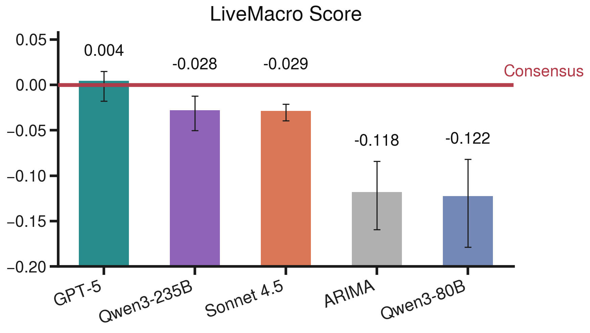
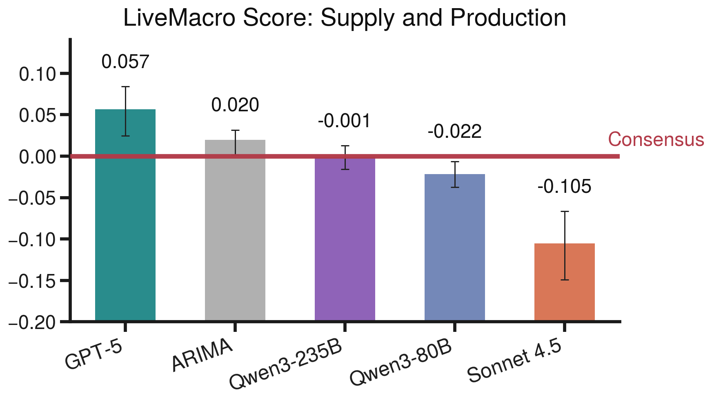

05 — FindingsResults
Six months of live evaluation. The top agent ties the professional consensus overall — but that aggregate hides sharp differences across the economy.
Headline: a tie at the top

By theme: where the skill is
Splitting the score by theme shows the aggregate is an average of very different stories.
- Above consensus — Supply and Production, Housing. Both rest on higher-frequency components, such as mortgage applications and housing sentiment. Updating inside the window pays off.
- Below consensus — Demand and Inflation. Well-anchored inflation expectations protect the professional consensus on headline inflation.
- Flat — Labor Market. Every model sits near zero, consistent with a signal-to-noise ceiling on the household survey.



LiveBetting: trading against the Fed
- Real GDP. Four agents finish the window with positive cumulative returns. Three beat the Atlanta Fed. Only the New York Fed stays ahead.
- Unemployment rate. The leading agent finishes above the Chicago Fed.
- CPI. The Cleveland Fed and the Bloomberg consensus still beat every agent — a real limit where institutional models are tuned to known economic structure.


Case study: watching a belief update
An hourly cadence lets us trace, after the fact, how one piece of news enters an agent's information set.
- GPT-5's March 2026 CPI nowcast sits near 2.7% through early April.
- On April 8 it jumps to about 3% inside a tight intraday window, then tracks the realized print.
- Two scheduled events fall in that window: the EIA Petroleum Status Report, showing a large gasoline-inventory drawdown, and FOMC minutes flagging upside inflation risk.
- Both push the same way. The size of the revision matches a back-of-the-envelope gasoline contribution under BLS expenditure weights.